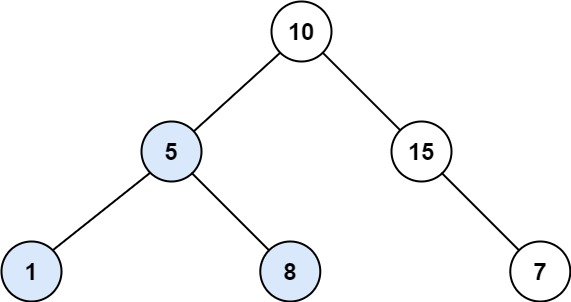

| Category | Difficulty | Likes | Dislikes |
|---|---|---|---|
| Algorithms | Medium | 1563 | 147 |
facebook | microsoft
Given the root of a binary tree, find the largest subtree, which is also a Binary Search Tree (BST), where the largest means subtree has the largest number of nodes.
A Binary Search Tree (BST) is a tree in which all the nodes follow the below-mentioned properties:
Note: A subtree must include all of its descendants.
Example 1:

Input: root = [10,5,15,1,8,null,7]
Output: 3
Explanation: The Largest BST Subtree in this case is the highlighted one. The return value is the subtree's size, which is 3.Example 2:
Input: root = [4,2,7,2,3,5,null,2,null,null,null,null,null,1]
Output: 2
Constraints:
[0, 104].-104 <= Node.val <= 104
Follow up: Can you figure out ways to solve it with O(n) time complexity?